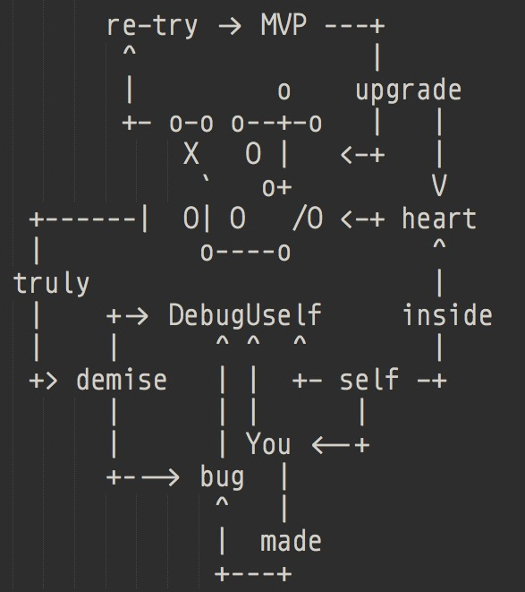

py.101.camp
ch10
190310 2042
CAMP

比来时强
WoW
不得不赞叹…
预约
闪电分享
@adi0229
3周合说
#154
@Shuangma (推迟到下周…)
一次精彩的磨难
#174
@XiaoYanWork
关于slack到 heroku 参数传递问题,分享一个误解的扩大化
#178
@yishu
是如何感受到那千万条道路的?
#168
@Xiaoshizi1024
分享从纷乱回到线索世界的体验
#180
@youying0356
工具帮助完成编程进步的心动一刻
AKA
All Know All
嗯哼

rhythm
ˈriT͟Həm
韵律/节拍
习惯
8w
成功
是成功者的习惯
自信
需要如何证明?
logging
一切…
依赖?
坚持节奏的动力…
嗯哼

learnning
如何求助?
能技
能使
目标对象
就
指定命题
产生
科学兴趣的
技术提问的智慧
作业?
pyenv
Python 本地环境
virtualenv
Kaopulity
- Keep
- all
- of
- processes
- usability
嗯哼

(￣▽￣)
#166
@chenmingio
[共创]“蟒营是什么?” 文案收集
I/O
io.101.camp


是也乎
- 190310 DAMA pub.
- 190309 DAMA ++story
- 190308 DAMA ++key words
- 190304 DAMA init.
KM

GFM
提问
+5 为什么?
5W1H
框架…
zoom.us
例蠎交流
- 周日 2042
404-101-4441- @huangyu9887 建议统一ID
VCS
玻璃花园
C-C 式串门儿
Activity
- commit
- commit-comments
- issue
- issue-comments
- slack


新业书
~ 转职手册共创
- @chenmingio


IDD
Issue Drive Develop
蠎周刊
嗯哼自己..
知行
合一